Content from sMRI Acquisition and Modalities
Last updated on 2025-02-26 | Edit this page
Estimated time: 30 minutes
Overview
Questions
- How is a structural MR image acquired?
- What anatomical features do different modalities capture?
Objectives
- Visualize and understand differences in T1,T2,PD/FLAIR weighted images.
You Are Here!
Image acquisition
The acquisition starts with application of strong magnetic field B0 (e.g. 1.5 or 3.0 Tesla > 10000x earth’s magnetic field) which forces the hydrogen nuclei of the abundant water molecules in soft tissues in the body to align with the field. You can think of hydrogen nuclei as tiny magnets of their own.
Then the scanner applies a radio-frequency (RF) (i.e. excitation) pulse which tilts these nuclei from their alignment along B0. The nuclei then precess back to the alignment. The precessing nuclei emit a signal, which is registered by the receiver coils in the scanner.
This signal has two components: 1) Longitudinal (z-axis along the scanner’s magnetic field) and 2) Transverse (xy-plane orthogonal to the scanner’s magnetic field).
Initially the longitudinal signal is weak as most nuclei are tilted away from the z-axis. However this signal grows as nuclei realign. The time constant that dictates the speed of re-alignment is denoted by T1.
Initially the transverse signal is strong as most nuclei are in phase coherence. The signal decays as the nuclei dephase as they realign. This decay is denoted by the T2 time constant.
The tissue specific differences in T1 and T2 relaxation times is what enables us to see anatomy from image contrast. The final image contrast depends on when you listen to the signal (design parameter: echo time (TE)) and how fast you repeat the tilt-relax process i.e. RF pulse frequency (design parameter: repetition time (TR)).
T1 and T2 relaxation
Here we see signal from two different tissues as the nuclei are tilted and realigned. The figure on the left shows a single nucleus (i.e. tiny magnet) being tilted away and then precessing back to the the initial alighment along B0. The figure on the right shows the corresponding registered T1 and T2 signal profiles for two different “tissues”. The difference in their signal intensities results in the image contrast.

Brain tissue comparison
The dotted-black line represents the epoch when you “listen” to the signal (i.e. echo time or TE).
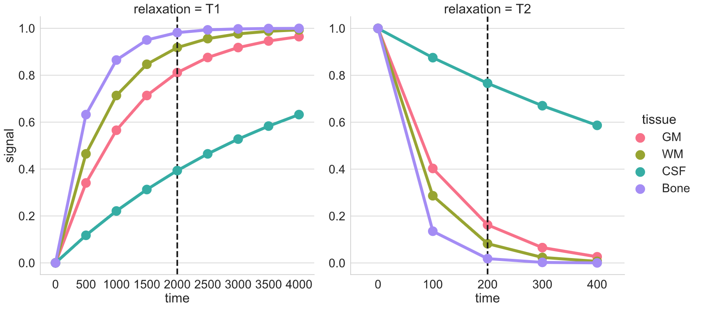)
T1w, T2w, and PD acquisition
| TE short | TE long (~ T2 of tissue of interest) | |
|---|---|---|
| TR short (~ T1 of tissue of interest) | T1w | - |
| TR long | Proton Density (PD) | T2w |
Note: More recently, the FLAIR (Fluid Attenuated Inversion Recovery) sequence has replaced the PD image. FLAIR images are T2-weighted with the CSF signal suppressed.
pulse sequence parameters and image contrast
What are the two basic pulse sequence parameters that impact T1w and T2w image contrasts? Which one is larger?
Repetition time (TR) and echo time (TE) are the two pulse sequence parameters that dictate the T1w and T2w image contrasts. TR > TE.
T1 and T2 relaxation times for various tissues
| T1 (ms) | T2 (ms) | |
|---|---|---|
| Bones | 500 | 50 |
| CSF | 4000 | 500 |
| Grey Matter | 1300 | 110 |
| White Matter | 800 | 80 |
Tissue type and image contrast
In the T1w image, which one is brighter: White matter, Grey Matter, or CSF?
White Matter (i.e. axonal tracts)


Applications per modality
| Modality | Contrast Characteristics | Use Cases |
|---|---|---|
| T1w | Cerebrospinal fluid is dark | Quantifying anatomy e.g. measure structural volumes |
| T2w | CSF is light, but white matter is darker than with T1 | Identify pathologies related to lesions and tumors |
| PD | CSF is bright. Gray matter is brighter than white matter | Identify demyelination |
| FLAIR | Similar to T2 with the CSF signal suppressed | Identify demyelination |
Image acquisition process and parameters
What do we want?
- High image contrast
- High spatial resolution
- Low scan time!
What can we control?
Magnetic strengths 1.5T vs 3T vs 7T
- Higher magnetic strength –> better spatial resolution, better SNR (S ∝ B0^2); but more susceptible to certain artifacts.
MR sequences (i.e. timings of “excitation pulse”, “gradients”, and “echo acquisition” )
- Spin echo: Slower but better contrast to noise ratio (CNR)
- Gradient echo: Quicker but more susceptible to noise
e.g. MPRAGE: Magnetization Prepared - RApid Gradient Echo (Commonly used in neuroimaging)
| MP-RAGE | MP2-RAGE |
|---|---|
| 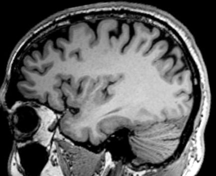 | 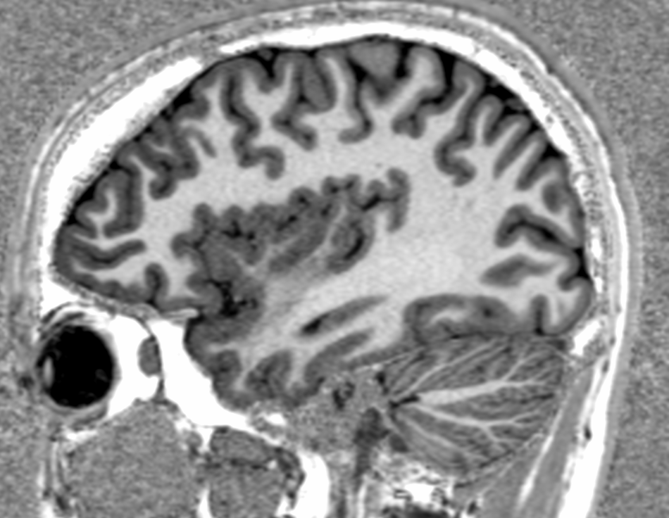 |
Interacting with images (see this notebook for detailed example.)
PYTHON
local_data_dir = '../local_data/1_sMRI_modalities/'
T1_filename = local_data_dir + 'craving_sub-SAXSISO01b_T1w.nii.gz'
T2_filename = local_data_dir +'craving_sub-SAXSISO01b_T2w.nii.gz'
T1_img = nib.load(T1_filename)
T2_img = nib.load(T2_filename)
# grab data array
T1_data = T1_img.get_fdata()
T2_data = T2_img.get_fdata()
# plot
plotting.plot_anat(T1_filename, title="T1", vmax=500)
plotting.plot_anat(T2_filename, title="T2", vmax=300)| T1w | T2w |
|---|---|
| 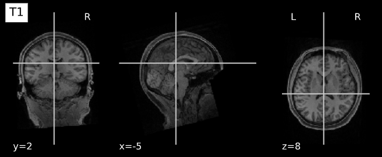 |  |
Key Points
- Different acquisition techniques will offer better quantification of specific brain tissues
Content from sMRI Clean-up
Last updated on 2025-02-26 | Edit this page
Estimated time: 45 minutes
Overview
Questions
- What are the sources of noise and artifacts in MR images?
- How do we extract/mask the brain?
Objectives
- Visualize bias fields and motion artifacts
- Generate brain masks
You Are Here!
Why do we need image clean-ups?
Correcting or cleaning-up certain artifacts from the raw (i.e. acquired) MR scans is crucial for the successful processing of subsequent image normalization tasks as well as the downstream statistical analyses. Some version (i.e. custom algorithm) of these two tasks is implemented in all commonly deployed processing pipelines such as FreeSurfer, FSL etc.
In this episode we will look at two common image clean-up tasks 1) Intensity normalization 2) Brain extraction.
Intensity normalization (a.k.a bias field correction; a.k.a. intensity inhomogeneity correction)
The bias field is a low-frequency spatially varying MRI artifact resulting from spatial inhomogeneity of the magnetic field, variations in the sensitivity of the reception coil, and the interaction between the magnetic field and the human body.
It causes a smooth signal intensity variation within tissue of the same physical properties.
The bias field is dependent on the strength of the magnetic field. If it is not corrected for 1.5T or higher MR scanners, it can considerably affect downstream analyses. Stronger magnets will induce higher bias.
-
Commonly used tools
- ANTs N4 bias correction (See figure below)
- FSL FAST (Note:FSL FAST is a multi-purpose segmentation tool that includes the bias field correction.)
Bias field correction quiz
What is the difference between bias field and image noise?
Bias field is modeled as multiplicative factor, whereas noise is typically assumed as additive and spatially independent (Gaussian) factor.
i.e. v(x) = u(x)f(x) + n(x), where v is the given image, u is the uncorrupted image, f is the bias field, and n is the noise.
ANTs N4 correction
- Acquired T1w image (b) Estimated the bias field which can then be used to “correct” the image. (c) Bias field viewed as a surface to show the low frequency modulation. 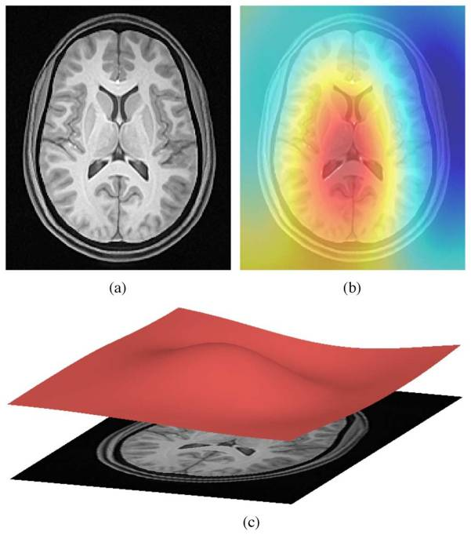
Side-note: ANTs is a software comprising several tools and image processing algorithms. ANTs can be run independently or we can import ANTs scripts in python using nipype library.
PYTHON
n4 = N4BiasFieldCorrection()
n4.inputs.dimension = 3
n4.inputs.input_image = 'structural.nii'
n4.inputs.bspline_fitting_distance = 300
n4.inputs.shrink_factor = 3
n4.inputs.n_iterations = [50,50,30,20]
n4.cmdlineOUTPUT
'N4BiasFieldCorrection --bspline-fitting [ 300 ] -d 3 --input-image structural.nii --convergence [ 50x50x30x20 ] --output structural_corrected.nii --shrink-factor 3'Impact of correction (source: Despotović et al.)
The top figure panel shows original and bias field corrected MR image slices. The middle figure panel shows the difference in the intensty histograms for the two image slices. And the bottom figure panel shows the impact of bias correction on a subsequent image segmentation task.
Visualizing “before” and “after”
PYTHON
T1_orig = subject_dir + 'orig.mgz'
T1_corrected = subject_dir + 'nu.mgz'
T1_img_orig = nib.load(T1_orig)
T1_img_corrected = nib.load(T1_corrected)
# plot
cut_coords = (-85,-2,-5)
plotting.plot_anat(T1_orig, title="T1_orig", cut_coords=cut_coords, vmax=255)
plotting.plot_anat(T1_corrected, title="T1_corrected_img", cut_coords=cut_coords, vmax=255)| Before | After |
|---|---|
| 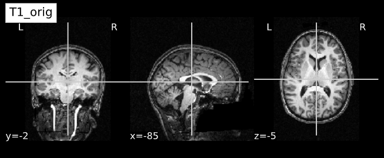 | 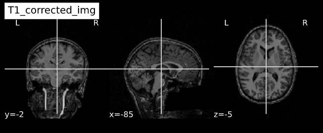 |
Brain extraction (a.k.a skull-stripping)
Image contrasts from nonbrain tissues such as fat, skull, or neck can cause issues with downstream analyses starting with brain tissue segmentation.
The brain extraction generates a mask that identifies brain voxels comprising grey-matter (GM), white-matter(WM), and Cerebrospinal fluid (CSF) of the cerebral cortex and subcortical structures, including the brain stem and cerebellum.
The scalp, dura matter, fat, skin, muscles, eyes, and bones are classified as nonbrain voxels.
-
Commonly used tools
Note 1: At this point we are NOT trying to extract the brain sulci and gyri (i.e. cortical folds). We are just creating a simple brain mask for computational purposes, which need not capture the precise brain anatomy. Thus you may see some marrow and membrain included in the extracted brain.
Note 2: Brainstem and spinal cord are continuous so a rather arbitrarily cut-off point is selected.
Example brain extractions pass / fail
| Pass | Fail |
|---|---|
| 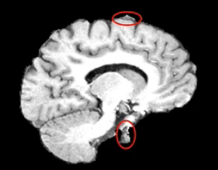 | 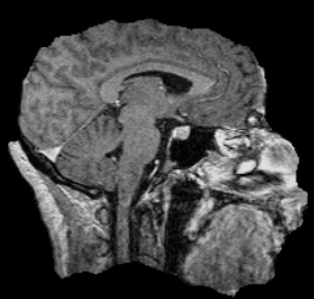 |
Source: FSL Introduction to Brain Extraction
Brain extraction quiz
Can we use this brain-mask as an estimate for brain volume?
Brain mask at this stage only offers a crude estimate about total brain volume. It can be used for quality control (e.g. detecting preprocessing algorithm failures). More accurate estimates of total brain and intracranial volumes are calculated in subsequent steps, which are used as covariates or normalizing factors in statistical analysis.
Side-note: ANTs is a software comprising several tools and image processing algorithms. ANTs can be run independently or we can import ANTs scripts in python using nipype library.
PYTHON
brainextraction = BrainExtraction()
brainextraction.inputs.dimension = 3
brainextraction.inputs.anatomical_image ='T1.nii.gz'
brainextraction.inputs.brain_template = 'study_template.nii.gz'
brainextraction.inputs.brain_probability_mask ='ProbabilityMaskOfStudyTemplate.nii.gz'
brainextraction.cmdlineOUTPUT
'antsBrainExtraction.sh -a T1.nii.gz -m ProbabilityMaskOfStudyTemplate.nii.gz
-e study_template.nii.gz -d 3 -s nii.gz -o highres001_'Visualizing “before” and “after” (see ../code/2_sMRI_image_cleanup.ipynb for detailed example.)
import nibabel as nib from nilearn import plotting
PYTHON
T1_normalized = subject_dir + 'T1.mgz'
T1_brain_extract = subject_dir + 'brainmask.mgz'
T1_img_normalized = nib.load(T1_normalized)
T1_img_brain_extract = nib.load(T1_brain_extract)
# plot
cut_coords = (-85,-2,-5)
plotting.plot_anat(T1_img_normalized, title="T1_img_normalized", cut_coords=cut_coords, vmax=255)
plotting.plot_anat(T1_img_brain_extract, title="T1_img_brain_extract", cut_coords=cut_coords, vmax=255)| Before | After |
|---|---|
| 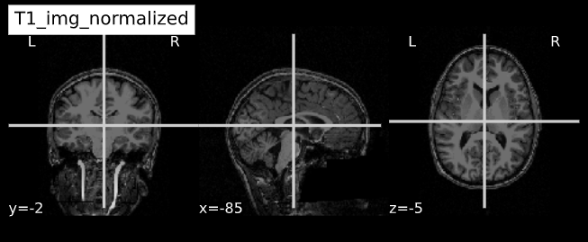 | 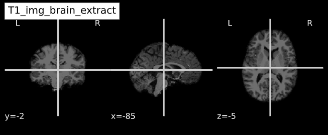 |
Key Points
- Presence of artifacts can lead to flawed analysis and incorrect findings
Content from sMRI Spatial Normalization
Last updated on 2024-02-19 | Edit this page
Estimated time: 45 minutes
Overview
Questions
- What are reference coordinate systems
- What are ‘templates’, ‘atlases’?
- What is spatial normalization?
Objectives
- Understand reference spaces and registration process
You Are Here!
Why do we need spatial normalization
What do we need for spatial normalization
1. Coordinate systems and spaces
- World coordinates
- Anatomical coordinates
- Image coordinates
Image source
World coordinates
The world coordinates refer to a Cartesian coordinate system in which a MRI (or other modality) scanner is positioned.
Anatomical coordinates
The anatomical space is coordinate system (X,Y,Z) that consists of three planes to describe the standard anatomical position of a human
- Axial plane is parallel to the ground and separates the head (Superior) from the feet (Inferior)
- Coronal plane is perpendicular to the ground and separates the front (Anterior) from the back (Posterior)
- Sagittal plane separates the Left from the Right
The origin and directions of anatomical coordinate system are defined by conventions. In neuroimaging the most commonly used definition is the stereotaxic space.
Stereotaxic space
-
A 3-dimensional coordinate reference frame based on anatomical landmarks - originally used to guide neurosurgical procedures.
- A/P means anterior/posterior
- L/R means left/right
- S/I means superior/inferior
- Example: RAS
- First dimension (X) points towards the right hand side of the head
- Second dimension (Y) points towards the Anterior aspect of the head
- Third dimension (Z) points towards the top of the head
- Directions are from the subject’s perspective. In the RAS coordinate system, a point to the subject’s left will have a negative x value.
-
Talairach space
- Derived from a single 60-yr old female cadaver brain
-
MNI space(s)
- Similar to the original Talairach space but the Z-coordinate has approximately +3.5 mm offset relative to the Talairach coordinate.
Image coordinates
The image coordinate system (i,j,k) describes the acquired image (voxels) with respect to the anatomy. The MR images are 3D voxel arrays (i.e. grids) whose origin is assigned at the upper left corner. The i axis increases to the right, the j axis to the bottom and the k axis backwards.
The MR image metadata stores the anatomical location of the image origin and the spacing between two voxels (typically in mm).
For examples:
- image coordinate: (0,0,0) ~ anatomical location: (100mm, 50mm, -25mm)
- The spacing between voxels along each axis: (1.5mm, 0.5mm, 0.5mm)
Image source
Quiz: coordinate systems
What happens when you downsample a MR image?
Downsampling reduces the number of total voxels in the image. Consequently the voxel-spacing is increased as more anatomical space is “sampled” by any given voxel. Note that the new intensity values of the resampled voxels are determined based on the type of interpolation used.
2. MR image templates
An anatomical template is an average MR volume whose voxels encode the average probability of different tissue classes (e.g. WM, GM, and CSF) at particular spatial location. The template creation is an iterative process comprising normalization, alignment, and averaging of a set of MR images from several different subjects.
Structural T1‐weighted templates serve as a common reference space and allow researchers to combine and compare data from multiple subjects.
-
Templates play an important role in a variety of neuroimaging tasks:
- Target image for spatial normalization in voxel‐wise analyses
- Automated intensity based WM, GM, and CSF tissue‐segmentation of MR images
- Anatomical atlas creation for region of interest analyses
- Automated seed selection for connectivity analyses
A good template is supposed to be a representative average of the study cohort. However for computational reasons (template creation is a computationally intensive process), and to maintain comparability across studies, image processing pipelines typically use publicly available templates.
-
Commonly used templates:
-
MNI 305
- an average of 305 T1-weighted MRI scans from young healthy adults
- 305 normal MRI brains were linearly coregistered (9-param) to 241 brains that had been coregistered (roughly) to the Talairach atlas.
-
Collin27
- One individual scanned 27 times and the images linearly registered to create an average with high SNR and structure definition
- Linearly registered to the MNI 305
-
MNI152
linear a.k.a. ICBM152 (International Consortium for Brain Mapping)
- An average of 152 T1-weighted MRI scans from young adults
- Linearly coregistered (9-param) to the MNI 305
- Higher resolution and better contrast than the MNI305
- Used by SPM
-
MNI152
nonlinear
- Version of MNI152 nonlinearly registered to MNI 305
- Updated versions
- MNI152NLin6Asym: used by FSL
- MNI152NLin2009cAsym: used by fMRIprep
-
MIITRA
- An average of 222 T1-weighted MRI scans from older adults
- Nonlinearly registered to MNI/ICBM152 2009 version.
-
fsaverage
- Surface template characterized by “vertices and faces/triangles”
- Spherical alignment of 40 participants
- 163,842 vertices per hemispheres
-
MNI 305
3. Image registration
A process that aligns an image from one coordinate space to another.
-
Purpose
- building templates
- native (subject) space to template-space alignment (normalization)
- inter-subject alignment (typically for cohort specific)
- intra-subject alignment (co-registration of image modalities or longitudinal analyses)
-
Image similarity metrics
- correlation ratio (CR)
- cross-correlation (CC)
- mutual information (MI)
-
Transforms
- Linear: global feature aligment
- Rigid (6 parameters): rotation, translation
- Affine (12 parameters): rotation, translation, scaling, skewing
- Nonlinear (a.k.a elastic): local feature aligment via warping
- Computationally intensive deformation models with large number of parameters
- Employ diffeomorphic models that preserve topology and source-target symmetry
- Linear: global feature aligment
Note: Linear registrations are often used as an initialization step for non-linear registration.
- Commonly used algorithms
| Algorithm | Deformation | ~ parameters |
|---|---|---|
| FSL FLIRT | Linear | 9 |
| ANIMAL | Non-linear (Local translation) | 69K |
| DARTEL Toolbox | Non-linear (diffeomorphic) | 6.4M |
| ANTs (SyN) | Non-linear (bi-directional diffeomorphic) | 28M |
- Rigid registration example (source: SimpleITK):
- The figure below shows the source image being registered to the target (left) in an iterative process. The optimized loss is shown on the right.

- Nonlinear deformation example (source: 3D Slicer publication,
wiki)
- The figure below shows local deformation (i.e. warping) of source image due to nonlinear registration.
Quiz: Image registration
What would the information encoded in the non-linear deformation tell you about the subject?
The deformation fields encode information regarding local morphometric brain changes. These can be quantified using “Jacobians” of the deformation field, and can be used to assess subtle morphometric differences between groups or timepoints.
Python snippet (see ../code/3_sMRI_spatial_norm.ipynb for detailed example.)
PYTHON
from nilearn import plotting
from nilearn import image
from nibabel.affines import apply_affinePYTHON
cut_coords = (-40,10,0)
A = np.array([[1.053177, -0.061204, -0.060685, 90.310684],
[0.070210, 1.009246, 0.117766, -9.806847],
[0.023069, -0.117785, 1.186777, 13.209366],
[0. ,0. , 0., 1.]])
cut_coords_affine_transformed = apply_affine(A, cut_coords)
x,y,z = cut_coords_affine_transformed
cut_coords_affine_transformed_str = "({},{},{})".format(int(x),int(y),int(z))
print("Subject space to refernce space mapping:\n {} --> {}".format(cut_coords,cut_coords_affine_transformed_str))OUTPUT
Subject space to refernce space mapping:
(-40, 10, 0) --> (47,-2,11)Content from sMRI Segmentation and Parcellation
Last updated on 2024-02-19 | Edit this page
Estimated time: 35 minutes
Overview
Questions
- How do we segment the brain into tissue classes ?
- How do we further divide a tissue class into sub-components ?
- How are volumetric and surface data defined ?
Objectives
- Understand and visualize tissue segmentation
- Manipulate atlases to extract regions of interests
- Visualize and interact with both volumetric and surface data
You Are Here!
Segmentation of brain tissues
Brain anatomy is different for every individual. Brain tissues are typically divided into:
- grey matter (GM), containing neuron cell bodies
- white matter (WM), including neuron connection fibers wrapped in a special signal-accelerating substance called myelin
- cerebro-spinal fluid (CSF), a protecting fluid present mostly around the brain but also within brain cavities called ventricles
Each class can inform on different aspects of the brain. Therefore it is often useful to segment the brain in these tissue components for further processing.
An important aspect to keep in mind is that aging and disease can cause tissue modifications. Common changes include a reduction in GM, as in the case of ageing and neurodegenerative diseases such as Alzheimer’s. A tumor can cause an important localized change of signal in the area most impacted by the tumor. Another example is visibly higher WM signal intensities on T2 MRI images, so called WM hyper-intensities, which can be related to vascular pathology (common in aging), or to myelin lesions characteristic of the multiple sclerosis disease.
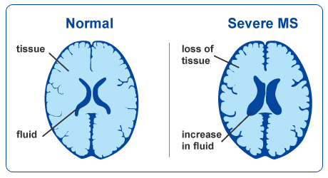This image is Copyright © My-MS.org and falls under Image License D defined under the Image License section of the My-MS.org Disclaimer page.
The analysis of preprocessed structural images then often consists in:
- Identifying tissue classes – including pathological tissue when appropriate – and their sub-components: this is done by segmenting the MRI images, and the topic of the current episode
- Quantifying morphological differences: this is typically done by measuring morphological properties such as GM volume or thickness in the whole brain or within specific regions, and this is the topic of episode 6
Can we measure brain changes in healthy young adults as well ? This is what we will ultimately try to find out at the end of our lesson !
In this episode we will more precisely look at:
- how to segment images into tissue classes, and also also sub-regions for the case of GM
- how to visualize segmentation results both for volumetric and surface data
Which software to use for segmentation and parcellation ?
Common software to segment volumetric data include FSL, SPM and ANTS. One of the most used software to segment surface data (in addition of volumetric data) is Freesurfer. In this episode, we will use the outputs generated by smriprep/fmriprep, which are workflows relying on all these software to generate a large variety of segmentation outputs.
Tissue segmentation and visualization in practice
The tissues can be differentiated according to the MRI signal intensity, however as seen in episode 2, the main magnetic field can introduce bias and create signal inhomogeneities. It is therefore important to implement bias field correction before carrying out segmentation according to tissue intensities.
Usually the T1 MRI modality is used for segmentation as it offers the best contrast between GM, WM and CSF. However combining multiple modalities (such as T2, PD and FLAIR) can help improving the segmentation, especially in the presence of lesions.
Tissue segmentation is presented first for normal controls. Then examples of changes that can happen in disease are shown for patients having Alzheimer’s or the multiple sclerosis disease.
In normal controls
In normal controls, the number of tissue classes is usually fixed
(there are not additional classes of pathological tissue). In practice,
a distribution of the intensity of the different tissue types can be
obtained by loading T1 volumes with nibabel then plotting a
slice with matplotlib and displaying an histogram with
seaborn (a plotting library built on top of
matplotlib). Assuming we already loaded a T1 brain volume
t1_brain_data, visualizing the T1 data and the associated
intensity histogram is obtained with:
PYTHON
# Plot first figure
plt.imshow(t1_data[:, :, 110], vmax=300000, origin="lower")
plt.title('T1 data before skull-stripping')
# Plot second figure
plt.imshow(t1_brain_data[:, :, 110], vmax=300000, origin="lower")
plt.title('T1 data after skull-stripping')PYTHON
# Compute the optimal bin size according to the data
bins = np.histogram_bin_edges(t1_brain_data[t1_brain_data != 0], bins='auto')
# Plot the histogram
sns.histplot(t1_brain_data[t1_brain_data != 0], bins=bins)
plt.xlim([0, 300000])We can see here three main components corresponding to GM, WM and CSF.
Jupyter notebook challenge
Can you modify the code in the Jupyter notebook to plot the histogram of the brain before skull-stripping ?
Try to switch the variable of one T1 image for another.
We can visualize the segmentation by loading adding an overlay
representing the different tissue classes after segmentation. For this,
we use the nilearn library to plot the t1_seg
segmentation data from smriprep/fmriprep.
PYTHON
from nilearn import plotting
plotting.plot_roi(roi_img=t1_seg, bg_img=t1, alpha=0.3, cmap="Set1");Now that we have access to each tissue class, we can check the contribution of each in the intensity histogram.
PYTHON
import itertools
labels = np.unique(t1_seg_data[t1_seg_data != 0]).astype('int')
palette = itertools.cycle(sns.color_palette("Set3"))
for label in labels:
sns.histplot(t1_brain_data[t1_seg_data == label], bins=bins, color=next(palette), alpha=0.6)A simple matter of thresholding ?
From the previous histogram, does the intensity itself seem enough to differentiate between different tissue classes ?
From the shape of the histogram we can see there is some overlap between the tissue distributions. Segmentation on intensity alone is most often not enough, and additional information is required, such as the use of a template with a-priori tissue probability maps (probability of presence of a given tissue at a given location).
A question of probability
In the previous segmentation volume, each voxel has a single integer value (1, 2 or 3) according to which tissue class it belongs. In practice however the primary output of segmentation tools are probability maps: one probability map per tissue class. In this probability map, each voxel has a value between 0 and 1 to indicate the probability to belong to that tissue class.
Below is an example of visualization of a GM probability map
GM_probmap.
The segmentation into GM and WM voxels allows to identify surfaces surrounding these tissues. The images below show:
- on the left: the delineation of GM (in pink) and WM (in blue) before discarding deep GM structures such as the basal ganglia
- on the right: the delineation of the outer GM layer called the pial surface (in red), and the underlying white matter surface (in blue) after discarding deep GM

We can now have a closer look at surface data !
Surface data
Some software such as Freesurfer specialize in surface data. Contrarily to volumetric data which are collections of voxels, surface data are collections of vertices and faces of a mesh.
The most commonly use surfaces are the pial GM and the underlying WM.
Let’s visualize the pial GM using nilearn on the Freesurfer
pial_surf_file output by smriprep/fmriprep and
loaded in the notebook.
PYTHON
# The pial surface is the most external surface of the GM
pial_surf = nib.load(pial_surf_file)
pial_verts, pial_faces = pial_surf.agg_data(('pointset', 'triangle'))
plotting.plot_surf((pial_verts, pial_faces))Jupyter notebook challenge
Can you modify the code in the Jupyter notebook to plot the white matter surface ?
Try to explore the BIDSLayout output to find the right surface file.
In disease such as Alzheimer’s and multiple sclerosis
The brain GM volume tends to shrink with age, with the GM loss typically replaced with CSF. This process is called atrophy. In Alzheimer’s disease and other neuro-degenerative disease, atrophy is amplified (the “degeneration” is the loss of GM). Therefore special care is required when processing data of patients whose disease can cause changes in the brain morphology.
Below is a T1 image of an Alzheimer’s disease patient. An enlargement of the CSF-containing cavities, the ventricles, can be seen.
Below is a T1 and FLAIR image of an MS patient. The lesion-enhancing FLAIR modality clearly show lesions. These lesions can sometimes be seen on the T1 image. In this case they appear as dark spots called “black holes”.
Segmentation problems in disease
What problems do you expect in the tissue segmentation of multiple sclerosis images ?
An algorithm expecting three tissues types may misclassify lesions as GM on T1 images. Filling lesions with intensity corresponding to WM is a solution sometimes used to avoid these issues (e.g. with Freesurfer). Some software such as ANTs directly accepts a binary lesion mask as an input to deal with this kind of data.
Segmenting tissue classes into sub-components: atlasing, parcellation
A natural step after identifying tissue classes, is sub-dividing the tissue(s) of interest into sub-components. GM is commonly split into non-overlapping regions of interests (ROIs). This splitting process is called “parcellation” and allows to be more specific about the brain areas studied. Parcellation can be purely data-driven, anatomically-driven, or both.
In this lesson we focus on GM. WM parcellation is also common but it requires dedicated MRI sequences and analysis techniques, e.g. by identifying group of WM tracts called bundles with tractography (please refer to the lesson on diffusion MRI if you would like to know more about WM parcellation).
The usefulness of an atlas comes from the fact that each subject brain can be registered to the template on which that atlas is defined. A correct registration to the template is therefore essential for a correct labelling of the brain voxels / vertices. The template the images are registered to should also be the template on which the atlas has been defined (or highly similar).
Atlas vs Parcellation
A parcellation can be defined as the splitting of an object into non-overlapping components. Since an atlas divide the brain into regions, atlasing can be considered a kind of parcellation. Reciprocally, any kind of brain parcellation can be considered an “atlas”.
A difference is that an atlas is often expected to be defined on an entire brain, while a parcellation can be limited to a specific region (e.g. thalamus parcellation). A parcellation can also be applied for example to the cortical GM (the outer layer of the brain) or the subcortical GM for deep GM (GM structures below the cortex).
Note that Freesurfer call cortical parcellation “parcellation”
(denoting parc the associated files) and subcortical
parcellation “segmentation” (denoting seg the associated
files).
The picture can be muddled when considering probabilistic atlases. In this case each atlas region is associated to a probabilistic map. Just like tissue probability maps, each voxel (or vertex) has a given probability to belong to the region considered.
Probability atlas threshold
Given a probabilistic atlas, is there a single probability threshold which would guaranteed each brain volume voxel (or surface vertices) to have a unique label ? If yes, which threshold would you choose, and if not how would you proceed ?
In virtually all cases no single probability threshold will result in each voxel (or vertex) belonging to a unique ROI. A high threshold will result in voxels not having a label, while a low threshold will cause voxels to belong to overlapping probability maps. A “true” parcellation could be obtained by associating to each voxel (or vertex) the label with the maximum probability.
Visualizing and extracting ROIs of a non probabilistic volumetric atlas
An example of a volumetric atlas motivated by neuroanatomy is the
Automated Anatomical Labeling (AAL) atlas. Each ROI has an anatomically
meaningful text label. The atlas is aligned with the MNI MRI
single-subject brain. The atlas is represented as a 3D volume in which
each voxel has an integer index which corresponds to an ROI label,
e.g. 2401 for the
left hemisphere supplementary motor area.
Nilearn offers a collection of atlases in its
datasets module. The AAL atlas, text labels and integer
indices can all be obtained through this module.
PYTHON
from nilearn.datasets import fetch_atlas_aal
AAL_dataset = fetch_atlas_aal()
AAL_maps = AAL_dataset.maps
AAL_labels = AAL_dataset['labels']
AAL_labels_ix = AAL_dataset['indices']We can check the atlas dimension by loading it with
nibabel
OUTPUT
(91, 109, 91)Plotting the atlas
To plot the atlas we can use as background either the template on
which it was defined (or one highly similar), or a subject volume
aligned with that template. In our case we use the t1_mni
volume of our subject and use the plot_roi function of the
nilearn plotting module to add the atlas as an
overlay:
We can extract a specific ROI in two steps:
- Identify the integer index corresponding to the ROI
- Get all the voxels corresponding to that index
Identifying an ROI integer index
Sometimes the integer index directly correspond to the label list
index, e.g. if “visual cortex” is in position 3 in AAL_dataset[‘labels’]
then the corresponding integer index in the image is 3. For the AAL
atlas, the ROI indices are not in the order of the text labels so
nilearn provide a list of ROI indices. Since the list of
labels match the list of indices we proceed in two steps:
- Find the position of the ROI in the list of AAL_labels
- Use the same position in the list of indices
PYTHON
roi_label = "Supp_Motor_Area_L"
roi_label_pos = AAL_labels.index(roi_label)
roi_ix = int(AAL_labels_ix[roi_label_pos])
print(roi_ix)OUTPUT
2401Getting all voxels corresponding to that index
To create a binary ROI image from the ROI index, we:
- Create a boolean array with
Trueif the voxel label is equal to our ROI index, andFalseif not - Convert the boolean array to integer
PYTHON
roi_mask_arr_bool = (AAL_img.get_fdata() == roi_ix)
roi_mask_arr = roi_mask_arr_bool.astype(int)To create a nibabel image object, we then need to attach
the original image affine transform
we can now plot the ROI using the plot_roi function of
nilearn
Visualizing and extracting ROIs of a surface atlas
For the previous atlas, the unit elements to receive a label were voxels. When considering the surface of the cortex, unit elements are the vertices of the surface mesh. Each such vertex can receive a label, and the result is a surface parcellation.
Freesurfer relies on two surface atlases: the Desikan-Killiany Atlas with 68 ROIs and the Destrieux Atlas with 148 ROIs. The Destrieux atlas is part of the nilearn datasets and we will focus on this atlas in the lesson.
Surface datasets are split in left and right hemisphere. Let’s aim at plotting the left hemisphere. As we will see also how to plot a specific ROI, we will also extract the atlas labels.
PYTHON
from nilearn.datasets import fetch_atlas_surf_destrieux
parcellation_L = destrieux['map_left']
destrieux_labels = destrieux['labels']Plotting the atlas
For plotting a 3D volume we needed a 3D image template. For a surface, we need a 3D surface (also called mesh) template. The Destrieux atlas we collected is defined on the fsaverage5 Freesurfer template, so we will need it to plot our atlas.
PYTHON
fsaverage = fetch_surf_fsaverage()
mesh = fsaverage['pial_left']
plotting.plot_surf_roi(mesh, roi_map=parcellation_L,
hemi='left', view='lateral');Extracting a specific ROI
To extract a specific ROI, we can proceed as we did for the AAL atlas but using the Destrieux labels.
PYTHON
pcc_region = b'G_cingul-Post-dorsal'
roi_ix = destrieux_labels.index(pcc_region)
roi_mask_arr = (parcellation_L == roi_ix).astype(int)To plot that ROI, we can use the plot_surf_roi function
of the nilearn plotting module. We will plot
the medial view since this ROI is located towards the central part of
the brain. We will also use the template as background image since most
vertices do not have a label to be plotted.
PYTHON
plotting.plot_surf_roi(mesh, roi_map=roi_mask_arr, hemi='left', view='medial',
bg_map=fsaverage['sulc_left']);Jupyter notebook challenge
Can you modify the code in the Jupyter notebook to extract and display the right precuneus ?
This exercise involves a change of both ROI and hemisphere.
Because atlases can be overlaid on a subject brain registered to the atlas template, one can extract measurements specific to that subject within each atlas ROI. We will see common metrics and how to extract them in episode 6, and the important role of the WM and GM pial surfaces for this purpose.
Key Points
- Brain segmentation and parcellation is a key step towards further analysis
- The brain can be represented via different data format (volume, surface)
- Multiple python libraries are particularly useful to manipulate brain data
Content from sMRI Quality Control
Last updated on 2025-02-26 | Edit this page
Estimated time: 30 minutes
Overview
Questions
- How do we identify image preprocessing failures?
Objectives
- Visualize processing failures
- Familiarize with automatic QC tools
You Are Here!
Things that can go wrong…
Acquistion
Quantification
Exisiting image processing pipelines (e.g. FreeSurfer, CIVET) will have a few QC tools and examples that can help with failure detection and quality control of volumetric segmentations and surface parcellations.
Usage of new method will require your own QC protocols. Especially for highly specific segmentation methods require visual inspection from a neuroanatomy expert. Even for the qualitiative visual inspection, it is important create a QC protocol and share it with the results.
Note: see Hippocampal and cerebellar for segmentation method details.
Automatic QC tools
Using reports from exisiting pipelines: https://fmriprep.org/en/stable/_static/sample_report.html
Using QC tools
MRIQC: extracts no-reference IQMs (image quality metrics) from structural (T1w and T2w) and functional MRI (magnetic resonance imaging) data. (Developed by the Poldrack Lab at Stanford University for use at the Center for Reproducible Neuroscience (CRN), as well as for open-source software distribution.)
| Individual report | Group report |
|---|---|
| 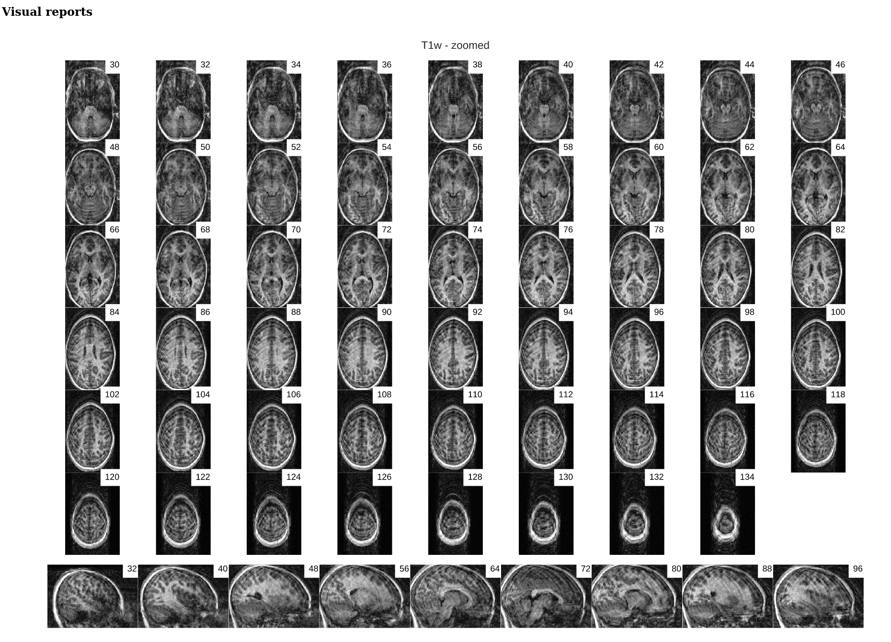 |
VisualQC: assistive tool to improve the quality control workflow of neuroimaging data (Author: Pradeep Reddy Raamana).
| T1w acquisition | Alignment | Cortical Parcellation |
|---|---|---|
 |
Key Points
- Image processing failures happen! It is important to perform systematic quality control to minimize biases
Content from sMRI Statistical Analysis
Last updated on 2024-02-19 | Edit this page
Estimated time: 35 minutes
Overview
Questions
- How to quantify brain morphology ?
- How to assess statistically differences of brain morphology ?
- Can we detect brain changes related to age in a cohort of young adults ?
Objectives
- Understand the main metrics characterizing the brain morphology
- Extract and rely on a set of metrics to assess the effect of age on multiple cortical regions
- Understand and implement voxel based morphometry to investigate the effect of age without predefined regions
You Are Here!
All the previous episodes presented the required steps to arrive at a stage where the data is ready for metrics extraction and statistical analysis. In this episode we will introduce common metrics used to characterize the brain structure and morphology, and we will investigate statistical approaches to assess if age related brain changes can be found in a cohort of young adults.
Quantifying tissue properties
As seen in previous episodes, brain structural data can be represented as volumes or surfaces. Each of these representations are associated to different characteristics. In this episode we will look at:
- how to measure GM volume when looking at volumetric data, i.e. voxels
- how to extract cortical thickness measures derived from surface data, i.e. meshes
Metric from volumetric data: region volumes
A simple metric to quantify brain imaging data is volume. The image is represented as voxels, however the voxel dimensions can vary from one MRI sequence to another. Some FLAIR sequences have 1.5 mm isotropic voxels (i.e. 1.5 mm wide in all directions), while T1 sequences have 1 mm isotropic voxels. Other sequences do not have isotropic voxels (the voxel dimensions vary depending on direction). As a result the number of voxels is not useful to compare subjects and a standard unit such that mm3 or cm3 should be used instead.
We will consider here a volumetric atlas created by
smriprep/fmriprep via Freesurfer. A
particularity is that this atlas is mapped to the subject native space
so that we can measure the volume of each atlas ROI in the space of the
subject. Our aim is to measure the volume of the right caudate nucleus,
in standard unit (mm3). We will first see how to obtain the volume
manually, and then how to simply retrieve it from a file referencing
several region volumes.
Measuring an ROI volume manually
Consider a subject’s native T1 volume t1 and a
parcellation of the subcortical GM provided by Freesurfer in that space,
t1_aseg. We already know from episode 4 how to extract an
ROI. According to the Freesurfer
Look-up Table the right caudate has index 50.
PYTHON
roi_ix = 50
roi_mask_arr_bool = (t1_aseg_data == roi_ix)
roi_mask_arr = roi_mask_arr_bool.astype(int)
roi_mask = nib.Nifti1Image(roi_mask_arr, affine=t1_aseg.affine)We can verify our ROI extraction by plotting it over the subject’s T1
data with nilearn plotting function:
We can get the number of voxels by counting them in the mask.
OUTPUT
3854An image voxel size can be obtained from the file metadata (i.e. data
annotation) stored in the image header. nibabel provide an
header attribute with a method get_zooms() to
obtain the voxel size.
OUTPUT
(1.0, 1.0, 1.0)In our case the volume of the voxel, the product of its dimensions, is simply 1mm3:
OUTPUT
1.0The volume in mm3 of the right caudate of our subject is then:
OUTPUT
3854.0Note that nibabel offers a utility function to compute
the volume of a mask in mm3 according to the voxel size:
OUTPUT
3854.0Extracting ROI volume from software generated reports
It turns out that characteristics of a number of ROIs are output by
Freesurfer and saved in a text file. For example the volume of
subcortical ROIs can be found in the file stats/aseg.stats.
We use the function islice of the Python
itertools module to extract the first lines of the
file:
PYTHON
n_lines = 110
with open(os.path.join(fs_rawstats_dir, "aseg.stats")) as fs_stats_file:
first_n_lines = list(islice(fs_stats_file, n_lines))OUTPUT
['# Title Segmentation Statistics \n',
'# \n',
'# generating_program mri_segstats\n',
'# cvs_version $Id: mri_segstats.c,v 1.121 2016/05/31 17:27:11 greve Exp $\n',
'# cmdline mri_segstats --seg mri/aseg.mgz --sum stats/aseg.stats --pv mri/norm.mgz --empty --brainmask mri/brainmask.mgz --brain-vol-from-seg --excludeid 0 --excl-ctxgmwm --supratent --subcortgray --in mri/norm.mgz --in-intensity-name norm --in-intensity-units MR --etiv --surf-wm-vol --surf-ctx-vol --totalgray --euler --ctab /opt/freesurfer/ASegStatsLUT.txt --subject sub-0001 \n',
...
'# ColHeaders Index SegId NVoxels Volume_mm3 StructName normMean normStdDev normMin normMax normRange \n',
' 1 4 3820 4245.9 Left-Lateral-Ventricle 30.4424 13.2599 7.0000 83.0000 76.0000 \n',
...
' 23 49 7142 6806.7 Right-Thalamus-Proper 83.4105 10.4588 32.0000 104.0000 72.0000 \n',
' 24 50 3858 3804.7 Right-Caudate 73.2118 7.9099 37.0000 96.0000 59.0000 \n',
' 25 51 5649 5586.9 Right-Putamen 79.4707 7.1056 46.0000 103.0000 57.0000 \n',
...Surprisingly the volume in mm3 is not the same as we found: 3804.7.
This is because instead of counting each voxel in the GM mask as 100%,
the fraction of estimated GM was taken into account. The estimation of
the so called “partial volume” can be done in several manners. One which
will be useful for us later is to use the GM probability map
GM_probmap as a surrogate of a GM partial volume map. Let’s
see the ROI volume we obtain in this way:
PYTHON
GM_roi_data = np.where(roi_mask_arr_bool, GM_probmap.get_fdata(), 0)
GM_roi_data.sum() * vox_sizeOUTPUT
3354.5343634674136Like with Freesurfer we observe a reduction of GM, albeit significantly more pronounced.
Jupyter notebook challenge
Taking into account partial volume, can you measure the volume of the Left Caudate ? And if you feel adventurous of the Left Lateral ventricle ?
Use the Freesurfer LUT to identify the correct ROI index. For the lateral ventricle, make sure you use the appropriate tissue type to correct for partial volume effect.
Metric from surface data: cortical thickness
As seen in the previous section, volumetric ROI metrics can be made available by dedicated software. This is also the case for surface metrics which are often more involved than computing the number of voxels. One of the most used surface metric is cortical thickness: the distance separating the GM pial surface from the WM surface directly underneath. We will use the output from Freesurfer to:
- extract cortical thickness information
- plot the associated surface data for one subject
- generate and plot summary group measurements
Extracting cortical thickness information
Freesurfer output a number of files including both volume and surface
metrics. These files are generated by Freesurfer for each subject and
can be found in derivatives/freesurfer/stats when using
smriprep/fmriprep.
OUTPUT
['lh.BA_exvivo.thresh.stats',
'rh.aparc.a2009s.stats',
'rh.aparc.pial.stats',
'rh.aparc.DKTatlas.stats',
'lh.curv.stats',
'lh.w-g.pct.stats',
'wmparc.stats',
'lh.aparc.stats',
'rh.BA_exvivo.thresh.stats',
'rh.BA_exvivo.stats',
'rh.w-g.pct.stats',
'lh.aparc.pial.stats',
'lh.BA_exvivo.stats',
'rh.curv.stats',
'aseg.stats',
'lh.aparc.DKTatlas.stats',
'lh.aparc.a2009s.stats',
'rh.aparc.stats']aseg files are related to subcortical regions, as we
just saw with aseg.stats, while aparc files
include cortical metrics and are often separated into left
(lh) and right hemisphere (rh).
aparc.stats is for the Desikan-Killiany atlas while
aparc.a2009s.stats is for the Destrieux atlas (148 ROIs vs
68 ROIs for Desikan-Killiany).
Looking at the Destrieux ROI measurements in the left hemisphere from
lh.aparc.a2009s.stats we get:
PYTHON
n_lines = 75
with open(os.path.join(fs_rawstats_dir, "lh.aparc.a2009s.stats")) as fs_stats_file:
first_n_lines = list(islice(fs_stats_file, n_lines))OUTPUT
['# Table of FreeSurfer cortical parcellation anatomical statistics \n',
'# \n',
'# CreationTime 2019/03/02-22:05:09-GMT\n',
'# generating_program mris_anatomical_stats\n',
'# cvs_version $Id: mris_anatomical_stats.c,v 1.79 2016/03/14 15:15:34 greve Exp $\n',
'# mrisurf.c-cvs_version $Id: mrisurf.c,v 1.781.2.6 2016/12/27 16:47:14 zkaufman Exp $\n',
'# cmdline mris_anatomical_stats -th3 -mgz -cortex ../label/lh.cortex.label -f ../stats/lh.aparc.a2009s.stats -b -a ../label/lh.aparc.a2009s.annot -c ../label/aparc.annot.a2009s.ctab sub-0001 lh white \n',
...
'# ColHeaders StructName NumVert SurfArea GrayVol ThickAvg ThickStd MeanCurv GausCurv FoldInd CurvInd\n',
'G&S_frontomargin 1116 840 1758 1.925 0.540 0.128 0.025 14 1.0\n',
'G&S_occipital_inf 1980 1336 3775 2.517 0.517 0.144 0.028 27 2.1\n',
'G&S_paracentral 1784 1108 2952 2.266 0.581 0.105 0.018 17 1.3\n',
...You can see a number of metrics, with more information in the skipped
header on their units. The one of particular interest to us is the
cortical thickness ThickAvg. Since the thickness is
measured at each vertex of the mesh, both the man and standard deviation
can be estimated for each ROI. The values at each vertex is available in
the freesurfer native file lh.thickness. Let’s use it to
plot the values on a mesh.
Plotting cortical thickness values on a subject mesh
To plot the cortical thickness values on a subject cortical mesh we
will use the native Freesurfer file formats (although the GII file
output by smriprep/fmriprep could also be used as seen in
episode 4). Considering we identified for the left hemispher the path to
the pial mesh lh_pial and the mesh thickness values
lh_thickness (as well as the sulcus mesh
lh_sulcus for a better plot rendering), we can obtain mesh
lateral and medial views with the following Python code:
PYTHON
# Lateral
plotting.plot_surf(lh_pial, surf_map=lh_thickness, hemi='left', view='lateral', bg_map=lh_sulcus);
# Medial
plotting.plot_surf(lh_pial, surf_map=lh_thickness, hemi='left', view='medial', bg_map=lh_sulcus);
Generating and plotting summary group measurements
Files including metrics for each subject can be leveraged to generate
group results automatically. The first step is to generate more easily
manipulatable CSV/TSV files from the Freesurfer native text files. This
can be done with the Freesurfer asegstats2table command
such as with the code below adapted from this
script:
BASH
SUBJECTS=(...)
MEASURE=thickness
PARC=aparc.a2009s
for HEMI in lh rh; do
echo "Running aparcstats2table with measure ${MEASURE} and parcellation ${parc} for hemisphere ${HEMI}"
aparcstats2table --subjects ${SUBJECTS[@]} \
--hemi ${hemi} \
--parc ${parc} \
--measure ${MEASURE} \
--tablefile ../derivatives/fs_stats/data-cortical_type-${parc}_measure-${MEASURE}_hemi-${HEMI}.tsv \
--delimiter 'tab'
doneThen the resulting files can be read with pandas to create a dataframe including cortical thickness information for all our subjects.
PYTHON
hemi="lh"
stats_file = os.path.join(fs_stats_dir,
f"data-cortical_type-aparc.a2009s_measure-thickness_hemi-{hemi}.tsv")
fs_hemi_df = pd.read_csv(stats_file,sep='\t')
fs_hemi_dfAs shown in the notebook associated with the lesson we can then
create a dataframe fs_df combining both data from both
hemispheres, while also renaming columns to facilitate subsequent
analysis.
OUTPUT
participant_id G_and_S_frontomargin G_and_S_occipital_inf G_and_S_paracentral G_and_S_subcentral G_and_S_transv_frontopol G_and_S_cingul_Ant G_and_S_cingul_Mid_Ant G_and_S_cingul_Mid_Post G_cingul_Post_dorsal ... S_precentral_sup_part S_suborbital S_subparietal S_temporal_inf S_temporal_sup S_temporal_transverse MeanThickness BrainSegVolNotVent eTIV hemi
0 sub-0001 1.925 2.517 2.266 2.636 2.600 2.777 2.606 2.736 2.956 ... 2.302 2.417 2.514 2.485 2.462 2.752 2.56319 1235952.0 1.560839e+06 lh
1 sub-0002 2.405 2.340 2.400 2.849 2.724 2.888 2.658 2.493 3.202 ... 2.342 3.264 2.619 2.212 2.386 2.772 2.45903 1056970.0 1.115228e+06 lh
2 sub-0003 2.477 2.041 2.255 2.648 2.616 2.855 2.924 2.632 2.984 ... 2.276 2.130 2.463 2.519 2.456 2.685 2.53883 945765.0 1.186697e+06 lh
3 sub-0004 2.179 2.137 2.366 2.885 2.736 2.968 2.576 2.593 3.211 ... 2.145 2.920 2.790 2.304 2.564 2.771 2.51093 973916.0 9.527770e+05 lh
4 sub-0005 2.483 2.438 2.219 2.832 2.686 3.397 2.985 2.585 3.028 ... 2.352 3.598 2.331 2.494 2.665 2.538 2.53830 1089881.0 1.497743e+06 lh
5 rows × 79 columnsWe can then create a boxplot of the mean cortical thickness
distribution in each ROI with seaborn, after first
converting the dataframe from wide to long format:
PYTHON
plot_df = fs_df[["hemi"] + roi_cols]
## Melt dataframe for easier visualization
plot_long_df = pd.melt(plot_df, id_vars = ['hemi'], value_vars = roi_cols,
var_name ='ROI', value_name ='cortical thickness')
plot_long_dfOUTPUT
hemi ROI cortical thickness
0 lh G_and_S_frontomargin 1.925
1 lh G_and_S_frontomargin 2.405
2 lh G_and_S_frontomargin 2.477
3 lh G_and_S_frontomargin 2.179
4 lh G_and_S_frontomargin 2.483
... ... ... ...
33443 rh S_temporal_transverse 3.006
33444 rh S_temporal_transverse 2.683
33445 rh S_temporal_transverse 2.418
33446 rh S_temporal_transverse 2.105
33447 rh S_temporal_transverse 2.524
Statistical analysis: cortical thickness analysis based on a surface atlas
Can we measure cortical thickness changes with age in young adults ?
Now that we have cortical thickness measures, we can try to answer this question by:
- adding subject demographic variables (age, sex) which will serve as predictors
- creating and fitting a statistical model: we will use linear regression model
- plotting the results
Gathering the model predictors
Since we are interested in the effect of age, we will collect the subject demographics information which is readily available from the BIDS dataset. In addition of the age information, we will use sex as a covariate.
PYTHON
subjects_info_withna = bids_layout.get(suffix="participants", extension=".tsv")[0].get_df()
subjects_info_withnaOUTPUT
participant_id age sex BMI handedness education_category raven_score NEO_N NEO_E NEO_O NEO_A NEO_C
0 sub-0001 25.50 M 21.0 right academic 33.0 23 40 52 47 32
1 sub-0002 23.25 F 22.0 right academic 19.0 22 47 34 53 46
2 sub-0003 25.00 F 23.0 right applied 29.0 26 42 37 48 48
3 sub-0004 20.00 F 18.0 right academic 24.0 32 42 36 48 52
4 sub-0005 24.75 M 27.0 right academic 24.0 32 51 41 51 53
... ... ... ... ... ... ... ... ... ... ... ... ...
221 sub-0222 22.00 F 20.0 right academic 30.0 41 35 51 48 42
222 sub-0223 20.75 F 23.0 left applied 26.0 33 41 54 36 41
223 sub-0224 21.75 M 20.0 right academic 34.0 22 45 47 46 46
224 sub-0225 20.25 F 28.0 right academic 27.0 48 32 43 42 37
225 sub-0226 20.00 M 20.0 right applied 19.0 28 40 39 42 29Jupyter notebook challenge
As the name of our dataframe implies, there may be an issue with the data. Can you spot it ?
You’ll need to use your pandas-fu for this exercise.
Check for NA (aka missing) values in your pandas dataframe.
You can use the isnull(), any() and
.loc methods for filtering rows.
Jupyter notebook challenge
If you spotted the issue in the previous challenge, what would you propose to solve it ?
Data imputation can be applied to appropriate columns, with the
fillna() method. You may be interested in the
.mean() and/our mode() methods to get the mean
and most frequent values.
Now that we have our predictors, to make subsequent analyses easier we can merge them with our response/predicted cortical thickness variable in a single dataframe.
PYTHON
demo_cols = ["participant_id", "age", "sex"]
fs_all_df = pd.merge(subjects_info[demo_cols], fs_df, on='participant_id')
fs_all_dfOUTPUT
participant_id age sex G_and_S_frontomargin G_and_S_occipital_inf G_and_S_paracentral G_and_S_subcentral G_and_S_transv_frontopol G_and_S_cingul_Ant G_and_S_cingul_Mid_Ant ... S_precentral_sup_part S_suborbital S_subparietal S_temporal_inf S_temporal_sup S_temporal_transverse MeanThickness BrainSegVolNotVent eTIV hemi
0 sub-0001 25.50 M 1.925 2.517 2.266 2.636 2.600 2.777 2.606 ... 2.302 2.417 2.514 2.485 2.462 2.752 2.56319 1235952.0 1.560839e+06 lh
1 sub-0001 25.50 M 2.216 2.408 2.381 2.698 2.530 2.947 2.896 ... 2.324 2.273 2.588 2.548 2.465 2.675 2.51412 1235952.0 1.560839e+06 rh
2 sub-0002 23.25 F 2.405 2.340 2.400 2.849 2.724 2.888 2.658 ... 2.342 3.264 2.619 2.212 2.386 2.772 2.45903 1056970.0 1.115228e+06 lh
3 sub-0002 23.25 F 2.682 2.454 2.511 2.725 2.874 3.202 3.012 ... 2.429 2.664 2.676 2.220 2.291 2.714 2.48075 1056970.0 1.115228e+06 rh
4 sub-0003 25.00 F 2.477 2.041 2.255 2.648 2.616 2.855 2.924 ... 2.276 2.130 2.463 2.519 2.456 2.685 2.53883 945765.0 1.186697e+06 lh
... ... ... ... ... ... ... ... ... ... ... ... ... ... ... ... ... ... ... ... ... ...
447 sub-0224 21.75 M 2.076 2.653 2.098 2.307 2.463 2.735 2.602 ... 2.136 3.253 2.495 2.309 2.562 2.418 2.41761 1140289.0 1.302062e+06 rh
448 sub-0225 20.25 F 2.513 2.495 2.141 2.492 2.757 2.553 2.238 ... 2.304 2.870 2.275 2.481 2.533 2.009 2.43156 1080245.0 1.395822e+06 lh
449 sub-0225 20.25 F 3.061 2.164 2.097 2.462 2.753 3.134 2.786 ... 2.174 3.429 2.385 2.378 2.303 2.105 2.41200 1080245.0 1.395822e+06 rh
450 sub-0226 20.00 M 3.010 2.189 2.562 3.142 4.072 3.051 2.292 ... 2.375 2.812 2.756 2.524 2.617 2.495 2.62877 1257771.0 1.583713e+06 lh
451 sub-0226 20.00 M 3.851 2.270 2.274 2.610 4.198 3.421 3.007 ... 2.371 4.938 2.894 2.663 2.445 2.524 2.63557 1257771.0 1.583713e+06 rh
452 rows × 81 columnsWe can plot the cortical thickness data as a function of age for a
single ROI to have an idea of what we may find when applying our model
on all ROIs. Let’s look for example at the anterior mid-cingulate cortex
(G_and_S_cingul_Mid_Ant).
PYTHON
response = 'G_and_S_cingul_Mid_Ant'
predictor = 'age'
g = sns.scatterplot(x=predictor, y=response, hue='hemi', data=plot_df)Interesting ! Let’s investigate more formally a potential association of cortical thickness with age in young adults.
Creating and fitting a statistical model
We will implement an ordinary least square (OLS) regression model. Before applying to all ROIs and correcting for multiple comparison, let’s test it on our previous ROI example.
For this purpose we use the Python statsmodels package.
We can create a model formula
{response} ~ {predictor} + {covariates} (similar to R) and
passing it as an argument to the ols method before fitting
our model. In addition of sex, we will use the total intra-cranial
volume (TIV) as covariate.
PYTHON
import statsmodels.api as sm
import statsmodels.formula.api as smf
response = 'G_and_S_cingul_Mid_Ant'
predictor = 'age'
hemi = 'lh'
hemi_df = fs_all_df[fs_all_df['hemi']==hemi]
covariates = 'eTIV + C(sex)'
# Fit regression model
results = smf.ols(f"{response} ~ {predictor} + {covariates}", data=hemi_df).fit()we can now look at the results to check for variance explained and statistical significance.
OUTPUT
OLS Regression Results
Dep. Variable: G_and_S_cingul_Mid_Ant R-squared: 0.060
Model: OLS Adj. R-squared: 0.047
Method: Least Squares F-statistic: 4.728
Date: Thu, 03 Jun 2021 Prob (F-statistic): 0.00322
Time: 02:41:24 Log-Likelihood: 62.682
No. Observations: 226 AIC: -117.4
Df Residuals: 222 BIC: -103.7
Df Model: 3
Covariance Type: nonrobust
coef std err t P>|t| [0.025 0.975]
Intercept 3.2906 0.183 17.954 0.000 2.929 3.652
C(sex)[T.M] -0.0097 0.033 -0.296 0.768 -0.074 0.055
age -0.0258 0.007 -3.706 0.000 -0.040 -0.012
eTIV 1.612e-08 7.58e-08 0.213 0.832 -1.33e-07 1.66e-07
Omnibus: 2.038 Durbin-Watson: 2.123
Prob(Omnibus): 0.361 Jarque-Bera (JB): 1.683
Skew: -0.157 Prob(JB): 0.431
Kurtosis: 3.282 Cond. No. 2.03e+07Rapid statistical interpretation
Can you provide one sentence summarizing the results of the OLS model regarding cortical thickness and age ?
To apply the model to all the ROIs, we use the same code as before
but within a for loop. Note that a custom function
format_ols_results has been created to save the results
from the previous output in a dataframe.
PYTHON
# OLS result df
ols_df = pd.DataFrame()
predictor = 'age'
covariates = 'eTIV + C(sex)'
for hemi in ['lh','rh']:
hemi_df = fs_all_df[fs_all_df['hemi']==hemi]
for response in roi_cols:
res = smf.ols(f"{response} ~ {predictor} + {covariates}", data=hemi_df).fit()
res_df = format_ols_results(res)
res_df['response'] = response
res_df['hemi'] = hemi
ols_df = ols_df.append(res_df)
ols_dfOUTPUT
index coef std err t P>|t| [0.025 0.975] R2 \
0 Intercept 2.481300e+00 2.210000e-01 11.239 0.000 2.046000e+00 2.916000e+00 0.004184
1 C(sex)[T.M] -7.200000e-03 3.900000e-02 -0.182 0.856 -8.500000e-02 7.100000e-02 0.004184
2 age -7.700000e-03 8.000000e-03 -0.921 0.358 -2.400000e-02 9.000000e-03 0.004184
3 eTIV 1.781000e-08 9.140000e-08 0.195 0.846 -1.620000e-07 1.980000e-07 0.004184
0 Intercept 2.593400e+00 1.650000e-01 15.732 0.000 2.269000e+00 2.918000e+00 0.018302
.. ... ... ... ... ... ... ... ...
3 eTIV 4.495000e-08 4.820000e-08 0.933 0.352 -5.000000e-08 1.400000e-07 0.075192
0 Intercept 3.044100e+00 2.870000e-01 10.589 0.000 2.478000e+00 3.611000e+00 0.040983
1 C(sex)[T.M] -8.830000e-02 5.100000e-02 -1.718 0.087 -1.900000e-01 1.300000e-02 0.040983
2 age -2.590000e-02 1.100000e-02 -2.370 0.019 -4.700000e-02 -4.000000e-03 0.040983
3 eTIV 1.439000e-07 1.190000e-07 1.210 0.228 -9.050000e-08 3.780000e-07 0.040983 We correct the results for multiple comparison with Bonferonni correction before plotting.
PYTHON
predictors = ['age']
all_rois_df = ols_df[ols_df['index'].isin(predictors)]
# Multiple comparison correction
n_comparisons = 2 * len(roi_cols) # 2 hemispheres
alpha = 0.05
alpha_corr = 0.05 / n_comparisons
# Get significant ROIs and hemis
sign_rois = all_rois_df[all_rois_df['P>|t|'] < alpha_corr]['response'].values
sign_hemis = all_rois_df[all_rois_df['P>|t|'] < alpha_corr]['hemi'].values
# Printing correction properties and results
print(f"Bonferroni correction with {n_comparisons} multiple comparisons")
print(f'Using corrected alpha threshold of {alpha_corr:5.4f}')
print("Significant ROIs:")
print(list(zip(sign_rois, sign_hemis)))OUTPUT
Bonferroni correction with 148 multiple comparisons
Using corrected alpha threshold of 0.0003
Significant ROIs:
[('G_and_S_cingul_Mid_Ant', 'lh'), ('G_and_S_cingul_Mid_Post', 'lh'), ('G_front_inf_Opercular', 'lh'), ('G_front_middle', 'lh'), ('G_front_sup', 'lh'), ('G_occipital_middle', 'lh'), ('G_temp_sup_G_T_transv', 'lh'), ('S_circular_insula_sup', 'lh'), ('S_front_middle', 'lh'), ('S_front_sup', 'lh'), ('S_parieto_occipital', 'lh'), ('S_precentral_sup_part', 'lh'), ('S_temporal_sup', 'lh'), ('G_and_S_cingul_Mid_Post', 'rh'), ('G_cuneus', 'rh'), ('G_front_inf_Triangul', 'rh'), ('G_front_middle', 'rh'), ('G_front_sup', 'rh'), ('G_pariet_inf_Angular', 'rh'), ('G_precentral', 'rh'), ('G_rectus', 'rh'), ('G_temporal_middle', 'rh'), ('S_circular_insula_sup', 'rh'), ('S_front_sup', 'rh')]We plot the p-values on a log scale, indicating both the non-corrected and corrected alpha level.
PYTHON
g = sns.catplot(x='P>|t|', y='response', kind='bar', hue='index', col='hemi', data=all_rois_df)
g.set(xscale='log', xlim=(1e-5,2))
for ax in g.axes.flat:
ax.axvline(alpha, ls='--',c='tomato')
ax.axvline(alpha_corr, ls='--',c='darkred')And the adjusted R-squared
Finally we can plot the t-scores on a mesh for global brain results visualization.
First we import the Destrieux mesh and labels from
nilearn.
PYTHON
# Retrieve both the Destrieux atlas and labels
destrieux_atlas = datasets.fetch_atlas_surf_destrieux()
parcellation = destrieux_atlas['map_left']
labels = destrieux_atlas['labels']
labels = [l.decode('utf-8') for l in labels]
# Retrieve fsaverage5 surface dataset for the plotting background.
fsaverage = datasets.fetch_surf_fsaverage()Then we a create a statistical map containing one t-score value for
each ROI of the mesh. Because the ROI labels are not identical between
Freesurfer and nilearn, we use a custom function
map_fs_names_to_nilearn to convert them.
PYTHON
### Assign a t-score to each surface atlas ROI
stat_map_lh = np.zeros(parcellation.shape[0], dtype=int)
nilearn_stats_lh, nilearn_stats_rh = map_fs_names_to_nilearn(all_rois_df, new2old_roinames)
# For left hemisphere
for roi, t_stat in nilearn_stats_lh.items():
stat_labels = np.where(parcellation == labels.index(roi))[0]
stat_map_lh[stat_labels] = t_stat
# For right hemisphere
stat_map_rh = np.zeros(parcellation.shape[0], dtype=int)
for roi, t_stat in nilearn_stats_rh.items():
stat_labels = np.where(parcellation == labels.index(roi))[0]
stat_map_rh[stat_labels] = t_statFinally we plot the results with nilearn
plot_surf_roi function.
PYTHON
# Lateral view of left hemisphere
plotting.plot_surf_roi(fsaverage['pial_left'], roi_map=stat_map_lh, hemi='left', view='lateral',
bg_map=fsaverage['sulc_left'], bg_on_data=True);
# Medial view of right hemisphere
plotting.plot_surf_roi(fsaverage['pial_right'], roi_map=stat_map_rh, hemi='right', view='medial',
bg_map=fsaverage['sulc_right'], bg_on_data=True);Statistical analysis: local GM changes assessed with Voxel Based Morphometry (VBM)
Relying on an atlas to identify and characterize brain changes or/and group differences is a common practice. While it offers more statistical power by limiting the comparisons to a limited set of regions, it introduces bias (the results depend on the choice of atlases) and may miss out on differences limited to a subregion within ROI. Voxel Based Morphometry (VBM) is a technique purely data-driven to detect changes at voxel level.
VBM aims at investigating each voxel independently across a group of subjects. This is a so called mass-univariate analysis: the analysis is done voxel by voxel and then multiple comparison correction is applied. In order to compare a given voxel across subjects, an assumption is that the voxel is at the same position in the subjects’ brain. This assumption is met by registering all maps of interest to a template. The maps investigated are often GM probability maps interpreted as local GM volume (as in this episode).
The comparaison requires first a correction for the transformation to
the template space (called modulation), and then a mass-univariate
statistical approach. We will examine the VBM workflow step by step. We
will run the steps on a limited subset of 10 sujects from our 226
subjects cohort in a subset directory, while loading the
corresponding cohort pre-computed results in the
all_subjects directory.
VBM processing
Template creation
How to create a template ?
We want to create a template on which to align the GM probability maps of all our subjects. Do you have an idea on how to create this templa?
You can have a look at the outputs generated by
smriprep/fmriprep.
One answer to the template challenge is to use the probability maps
GM10_probamp_files created in MNI space by
smriprep/fmriprep with the MNI152NLin2009cAsym
template. A simple template can be obtained by averaging all these maps.
Note that it is common to create a symmetric by template by average two
mirror versions. We are not doing this in this episode.
PYTHON
# Define subset and cohort dirs
vbm_subset_dir = os.path.join(vbm_dir, "subset")
vbm_cohort_dir = os.path.join(vbm_dir, "all_subjects")
from nilearn.image import concat_imgs, mean_img
# For demonstration create template for subset
GM10_probmaps_4D_img = concat_imgs(GM10_probmap_files)
GM10_probmap_mean_img = mean_img(GM10_probmaps_4D_img)
GM10_probmap_mean_img.to_filename(os.path.join(vbm_dir, "GM10.nii.gz"))
# For the real application load corresponding template for the cohort
GM226_probmap_mean_img = nib.load(os.path.join(vbm_cohort_dir, "GM226.nii.gz"))We will need to register all our subject native probability GM map to the template. The resulting template is 1mm-resolution but computation performance is increased if the template has a lower resolution, and our statistical analysis will require smoothing the data in any case. As a result we will resample the template to 2mm.
PYTHON
from nilearn.datasets import load_mni152_template
from nilearn.image import resample_to_img
template = load_mni152_template()
# Apply to our subset
GM10_probmap_mean_img_2mm = resample_to_img(GM10_probmap_mean_img, template)
GM10_probmap_mean_img_2mm.to_filename(os.path.join(vbm_dir, "GM10_2mm.nii.gz"))
# Load for the whole cohort
GM226_probmap_mean_img_2mm = nib.load(os.path.join(vbm_cohort_dir, "GM226_2mm.nii.gz"))We can plot the results to look at the effect of group size and resolution on the templates.
PYTHON
n_plots,n_cols = 4, 2
### Plot 1 mm templates
# Subset 10
plt.subplot(n_plots, n_cols, 1)
plt.imshow(GM10_probmap_mean_img.get_fdata()[:, :, 100], origin="lower", vmin=0, vmax=1)
# Cohort 256
plt.subplot(n_plots, n_cols, 2)
plt.imshow(GM226_probmap_mean_img.get_fdata()[:, :, 100], origin="lower", vmin=0, vmax=1)
### Plot 2 mm templates
# Subset 10
plt.subplot(n_plots, n_cols, 3)
plt.imshow(GM10_probmap_mean_img_2mm.get_fdata()[:, :, 47], origin="lower", vmin=0, vmax=1)
# Cohort 256
plt.subplot(n_plots, n_cols, 4)
plt.imshow(GM226_probmap_mean_img_2mm.get_fdata()[:, :, 47], origin="lower", vmin=0, vmax=1)Transformation correction, aka modulation
To compare GM values after transformation to the template space, they need to be modulated. Indeed, if a region in the space the subject expands when transformed to the template space, the intensity values must be corrected to account for the actually smaller original volume. This correction can be performed using the ratio between the template local volume and the corresponding original local volume. The amount of transformation is measured in each voxel by the Jacobian determinant J. So the modulation consists in multiplying or dividing by J according to how it is defined by the transformation software(template volume / local volume, or local volume / template volume).
In our case we run the FSL fnirt non-linear transform utility with the code below.
BASH
NATIVE_GM_MAPS=(data/derivatives/fmriprep/sub-*/anat/sub-+([0-9])_label-GM_probseg.nii.gz)
for GM_MAP in ${NATIVE_GM_MAPS[@]}; do
SUBJ_NAME=${GM_MAP%%_label*}
fsl_reg ${GM_MAP} GM226_2mm.nii.gz \
data/derivatives/vbm/subset/${SUBJ_NAME}/${SUBJ_NAME}_space-GM226_label-GM_probseg \
-fnirt "--config=GM_2_MNI152GM_2mm.cnf \
--jout=data/derivatives/vbm/subset/${SUBJ_NAME}/${SUBJ_NAME}_J"
doneFor FSL the Jacobian determinant output is less than 1 if the original volume expands when warped to the template, and greater than 1 when it contracts.
Jupyter notebook challenge
Considering the definition of J output by FSL. In place of the question mark (?), what should be in the code below the mathematical operator applied to the warped GM map to correct for expansion / contraction in the notebook code: +, -, * or / ?
PYTHON
for subj_name in subj_names:
# Get GM probability map in template space
warped_GM_file = os.path.join(subj_dir, f"{subj_name}_space-GM226_label-GM_probseg.nii.gz")
warped_GM = nib.load(warped_GM_file)
# Get scaling factors (trace of Jacobian)
J_map_file = os.path.join(subj_dir, f"{subj_name}_J.nii.gz")
J_map = nib.load(J_map_file)
# Compute modulated map
modulated_map = math_img("img1 ? img2", img1=warped_GM, img2=J_map)
# Save modulated image
modulated_map_file = os.path.join(subj_dir, f"{subj_name}_space-GM226_label-GM_mod.nii.gz")
modulated_map.to_filename(modulated_map_file)We can plot all the intermediary steps leading to the modulated maps for two subjects of our cohort.
PYTHON
subs = [1, 2]
n_sub = len(subs)
n_plots, n_cols = 5*n_sub, n_sub
i_slice_match = {1: 50, 2: 52}
for i_sub, sub in enumerate(subs):
### Original image
plt.subplot(n_plots, n_cols, (i_sub+1))
GM_native_probmap_file = GM_native_probmap_files[sub]
GM_native_probmap = nib.load(GM_native_probmap_file)
GM_native_probmap_2mm = resample_to_img(GM_native_probmap, template)
i_slice = i_slice_match[sub]
plt.imshow(GM_native_probmap_2mm.get_fdata()[:, :, i_slice], origin="lower", vmin=0, vmax=1.3)
### Template
plt.subplot(n_plots, n_cols, (i_sub+1)+1*n_sub)
plt.imshow(GM226_probmap_mean_img_2mm.get_fdata()[:, :, 47], origin="lower", vmin=0, vmax=1.3)
plt.title('Template')
plt.colorbar();
# Jacobian
plt.subplot(n_plots, n_cols, (i_sub+1)+2*n_sub)
log_ticks = np.logspace(-0.4, 0.4, 10)
plt.imshow(J_10maps_4D.get_fdata()[:, :, 47, sub], origin="lower", norm=LogNorm())
# Warped image
plt.subplot(n_plots, n_cols, (i_sub+1)+3*n_sub)
plt.imshow(warped_10maps_4D.get_fdata()[:, :, 47, sub], origin="lower", vmin=0, vmax=1.3)
# Subset 10
plt.subplot(n_plots, n_cols, (i_sub+1)+4*n_sub)
plt.imshow(modulated_10maps_4D.get_fdata()[:, :, 47, sub], origin="lower", vmin=0, vmax=1.3)To look at the effect of group size and resolution we can look at the mean warped images for each combination of group size / resolution.
PYTHON
n_plots, n_cols = 6, 2
### Plot GM warped maps
# Subset 10
plt.subplot(n_plots, n_cols, 1)
plt.imshow(warped_10maps_mean.get_fdata()[:, :, 47], origin="lower", vmin=0, vmax=1)
# Cohort 256
plt.subplot(n_plots, n_cols, 2)
plt.imshow(warped_226maps_mean.get_fdata()[:, :, 47], origin="lower", vmin=0, vmax=1)
### Plot Jacobian maps
# Subset 10
plt.subplot(n_plots, n_cols, 3)
plt.imshow(np.log(J_10maps_mean.get_fdata()[:, :, 47]), origin="lower", vmin=-0.5, vmax=0.5)
# Cohort 256
plt.subplot(n_plots, n_cols, 4)
plt.imshow(np.log(J_226maps_mean.get_fdata()[:, :, 47]), origin="lower", vmin=-0.5, vmax=0.5)
### Plot GM modulated maps
# Subset 10
plt.subplot(n_plots, n_cols, 5)
plt.imshow(modulated_10maps_mean.get_fdata()[:, :, 47], origin="lower", vmin=0, vmax=1)
# Cohort 256
plt.subplot(n_plots, n_cols, 6)
plt.imshow(modulated_226maps_mean.get_fdata()[:, :, 47], origin="lower", vmin=0, vmax=1)
Creation of a GM mask
To limit our analysis to GM voxels, a GM mask is useful. We can create it according to the mean modulated GM maps (or e.g. mean GM probabilistic maps), and setting a treshold. In our case we choose a modulation value of at least 0.05 in the group average to be included in the analysis.
PYTHON
GM_mask = math_img('img > 0.05', img=modulated_226maps_mean)
GM_mask.to_filename(os.path.join(vbm_dir, "GM226_mask.nii.gz"))The resulting GM maps cover a large extent of the brain:
Now that we have the modulated GM maps all aligned, we can carry out the statistical analysis.
VBM statistical analysis
For the VBM statistical analysis, we implement a two-level GLM model. While it is too long to cover in details in this episode, we can explain it briefly.
Principles
Consider a single voxel. The GLM model consists in:
- At subject level, evaluating the beta parameters (aka regression coefficients) in our model. Our model having:
- Modulated GM as response / predicted variable
- Age and sex as predictors (with sex as a covariate)
- At group level, indicating what is the combination of model parameters we want to assess for a significant effect. In our case we just want to look at the age beta paramater value across subjects. It is signicantly positive ? Significantly negative ? Not significantly negative or positive ?
Design matrix
The first step consists in defining a design matrix, this is a matrix with all our predictors/regressors. In our case this is a column for age, a column for sex, and for an intercept (a constant value).
PYTHON
# For the cohort including all subjects
design_matrix = subjects_info[["participant_id", "age", "sex"]].set_index("participant_id")
design_matrix = pd.get_dummies(design_matrix, columns=["sex"], drop_first=True)
design_matrix["intercept"] = 1
design_matrixOUTPUT
age sex_M intercept
participant_id
sub-0001 25.50 1 1
sub-0002 23.25 0 1
sub-0003 25.00 0 1
sub-0004 20.00 0 1
sub-0005 24.75 1 1
... ... ... ...
sub-0222 22.00 0 1
sub-0223 20.75 0 1
sub-0224 21.75 1 1
sub-0225 20.25 0 1
sub-0226 20.00 1 1OUTPUT
age sex_M intercept
participant_id
sub-0001 25.50 1 1
sub-0002 23.25 0 1
sub-0003 25.00 0 1
sub-0004 20.00 0 1
sub-0005 24.75 1 1
sub-0006 23.75 1 1
sub-0007 19.25 0 1
sub-0008 21.00 1 1
sub-0009 24.75 0 1
sub-0010 24.75 1 1To avoid having noisy data which does not satify the GLM statistical criteria (gaussianity of residuals) it is common to smooth the input maps. A smooth operation is included when implement our model next.
Second level GLM
The second step consists in defining what is the linear combination
of [age_beta_parameter, sex_beta_parameter, intercept] we
want to examine. In our case we want to look only at age, so our linear
combination is simply
1 * age_parameter + 0 * sex_parameter + 0 * intercept. This
is defined by what is called a contrast, which is then
[1, 0, 0] in our case.
These two steps can be implemented with the
SecondLevelModel python object of the nilearn
glm module. We can use the fit method of a
SecondLevelModel object on a design matrix to compute all
the beta parameters for each subject. Then we can call the
compute_contrast method with our contrast to assess if GM
local volume is signicantly associated with age.
For our subset of subjects the corresponding Python code is as follows:
PYTHON
from nilearn.glm.second_level import SecondLevelModel
# First level of the two-level GLM
level2_glm10 = SecondLevelModel(smoothing_fwhm=3.0, mask_img=GM_mask)
level2_glm10.fit(modulated_10map_files, design_matrix=dm10)
# Second level of the two-level
contrast = [1, 0, 0]
zmap10 = level2_glm10.compute_contrast(second_level_contrast=contrast, output_type='z_score')For the cohort we can simply load the associated z-score map.
PYTHON
zmap226_file = os.path.join(vbm_dir, "zmap_raw_GM226_age.nii.gz")
zmap226 = nib.load(zmap226_file)from nilearn.glm import threshold_stats_img from nilearn.reporting import make_glm_report from nilearn.plotting import plot_stat_map
Finally, do not forget we are looking at a massive collection of
voxels. Because we carry out so many statistical tests (one for each
voxel), it is crucial we correct for multiple comparison. We can do so
with nilearn threshold_stats_img function.
For the subset of subjects
PYTHON
zmap10_thr, z10thr = threshold_stats_img(zmap10, mask_img=GM_mask, alpha=.05,
height_control='fpr', cluster_threshold=50)For the whole cohort
PYTHON
zmap226_file = os.path.join(vbm_dir, "zmap_raw_GM226_age.nii.gz")
zmap226 = nib.load(zmap226_file)We can visualize the results on the cohort either interactively (with an arbitrary cluster threshold for visualization):
PYTHON
zmap226_thr, z226thr = threshold_stats_img(zmap226, mask_img=GM_mask, alpha=.05,
height_control='fpr', cluster_threshold=50)Or with a static plot (no cluster threshold)
Key Points
- Multiple volumetric and surface metrics exist to characterize brain structure morphology
- Both conventional statistical models and specific neuroimaging approaches can be used
- Caution should be exercised at both data inspection and model interpretation levels
Content from sMRI Analysis: Reproducibility Considerations
Last updated on 2025-02-26 | Edit this page
Estimated time: 30 minutes
Overview
Questions
- How sensitive are the findings to your MR pipeline parameters?
Objectives
- Understand impact of software and atlas choices
You Are Here!
MR image processing pipeline selection choices
-
Compute environment
- OS / system math libraries
- Programming libraries Python / R versions
-
Software (algorithms and their versions)
- Image clean-up
- Image normalization
- Image quantification
-
Quality control
- Manual protocol specifics
- Automatic outlier criteria
-
Biological priors
- Templates
- Atlases/parcellations: ROI definitions
Example software analysis
Task: compare cortical thickness between FreeSurfer and CIVET
Note: See this article for details on brain plots
Correlation between thickness measurements:
Possible choices for FreeSurfer parcellations
Inference pertaining to neuroantomical differences and/or prediction models based on individual neuroanatomical feature sets can be sensitive to parcellation choice.
Note: Image adopted from Madan 2021
Key Points
- It is crucial to assess biological vs methodological variation in your findings to avoid reproducibility crisis.